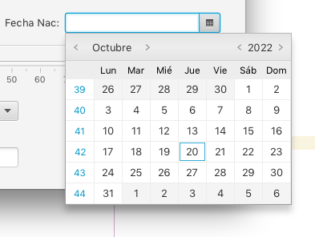
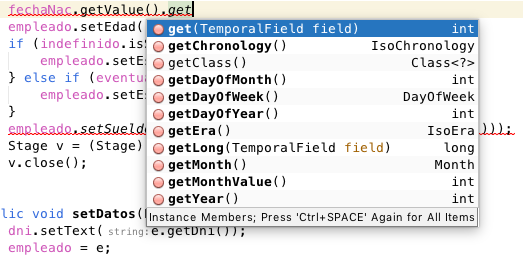
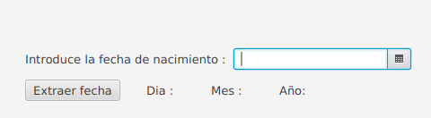
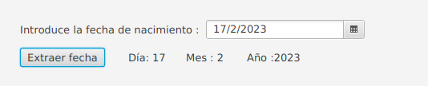

Un control JavaFX DatePicker permite al usuario añadir una fecha o elegir una fecha desde un cuadro de diálogo emergente similar a un asistente. El cuadro de diálogo emergente muestra solo fechas válidas, por lo que esta es una forma más fácil para que los usuarios elijan una fecha y se aseguren de que tanto la fecha como el formato de fecha añadidos en el campo de texto del selector de fecha sean válidos.
El DatePicker de JavaFX está representado por la clase javafx.scene.control.DatePicker.
DatePicker es una subclase de la clase ComboBox y, por lo tanto, comparte algunas similitudes con esta clase.
Crear un selector de fecha (DatePicker)
Se crea un control DatePicker a través del constructor de la clase DatePicker. Por supuesto, también podemos crearlo y añadirlo utilizando Scene Builder.
DatePicker datePicker = new DatePicker();Añadir de un DatePicker al gráfico de escena
Para hacer visible un DatePicker, se debe añadir al gráfico de escena JavaFX. Esto significa agregarlo a un objeto de escena o a un componente de diseño que se añade a un objeto de escena.
import javafx.application.Application;
import javafx.scene.Scene;
import javafx.scene.control.DatePicker;
import javafx.scene.layout.HBox;
import javafx.stage.Stage;
public class DatePickerExperiments extends Application {
@Override
public void start(Stage primaryStage) throws Exception {
primaryStage.setTitle("Button Experiment 1");
DatePicker datePicker = new DatePicker();
HBox hbox = new HBox(datePicker);
Scene scene = new Scene(hbox, 200, 100);
primaryStage.setScene(scene);
primaryStage.show();
}
public static void main(String[] args) {
Application.launch(args);
}
}
Resultado:

Lectura de la fecha seleccionada
La lectura de la fecha seleccionada en DatePicker se puede hacer usando su método getValue().
LocalDate value = datePicker.getValue();Importante: getValue() devuelve un objeto LocalDate que representa la fecha seleccionada en DatePicker.
Por ejemplo:
import javafx.application.Application;
import javafx.scene.Scene;
import javafx.scene.control.Button;
import javafx.scene.control.DatePicker;
import javafx.scene.layout.HBox;
import javafx.stage.Stage;
import java.time.LocalDate;
public class DatePickerExperiments extends Application {
@Override
public void start(Stage primaryStage) throws Exception {
primaryStage.setTitle("DatePicker Experiment 1");
DatePicker datePicker = new DatePicker();
Button button = new Button("Read Date");
button.setOnAction(action -> {
LocalDate value = datePicker.getValue();
});
HBox hbox = new HBox(datePicker);
Scene scene = new Scene(hbox, 300, 240);
primaryStage.setScene(scene);
primaryStage.show();
}
public static void main(String[] args) {
Application.launch(args);
}
}También tenemos los métodos asociados a LocalDate:

Con los que podemos extraer el día, el mes y el año (getDayOfMonth(), getMonthValue() y getYear()).
Por ejemplo con la siguiente pantalla (un DatePicker, un botón y una etiquetas:

El botón (en el controlador) podría extraer los datos y mostrarlos en las etiquetas:
@FXML
public void extraerFecha(){
LocalDate value = idDatePicker.getValue();
idLabelDia.setText("Día: "+value.getDayOfMonth());
idLabelMes.setText("Mes : "+value.getMonthValue());
idLabelAnyo.setText("Año :"+value.getYear());
}

IMPORTANTE: Pero lo que más interesará es como convertir un objeto de tipo LocalDate a un objeto de tipo Date (para poder llevarlo luego a una BBDD), por ejemplo fechaNac es un control de tipo DatePicker, con su método getValue() obtenemos un LocalDate y fecha en nuestros objetos son de tipo Date donde pretendemos almacenar la fecha:
Date fecha;
// Getting system timezone
ZoneId systemTimeZone = ZoneId.systemDefault();
// converting LocalDateTime to ZonedDateTime with the system timezone
ZonedDateTime zonedDateTime = fechaNac.getValue().atStartOfDay(systemTimeZone);
fecha = Date.from(zonedDateTime.toInstant());Y por supuesto, el caso contrario, pasar de un Date a un LocalDate para mostrar la fecha en una ventana:
fechaNac.setValue(e.getFechaNacimiento().toInstant().atZone(ZoneId.systemDefault()).toLocalDate());Donde e es un objeto que tiene como propiedad un campo tipo Date, el método getFechaNacimiento() nos devuelve el Date y se convierte a LocalDate y se inserta en el control DatePicker.